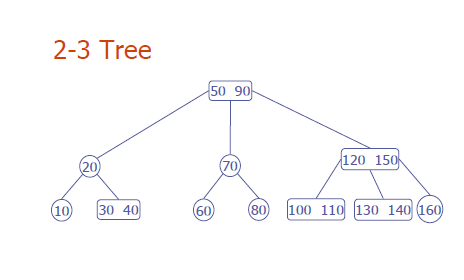

Two-Three-Tree Assignment
This assignment is to implement 2-3 Trees in Omega using Omega';s type
system to enforce the invariants of 2-3 trees.
See the following set of slides about 2-3 Trees I found on the web
as an introduction.
2-3 Trees have the follwoing invariants (taken from wikipedia with some of my own improvements).
- Every non-leaf is a 2-node or a 3-node. A 2-node contains one data item and
has two children. A 3-node contains two data items and has 3 children.
- All leaves are at the same level (the bottom level). This means the distance from a leaf to the root
is the same for all leaf nodes.
- All data is kept in sorted order.
- Leaf node will contain 1 or 2 data fields.
Here is a picture of a 2-3 tree.

As homework do the following
- Define an Omega generalized algebraic datatype to encode 2-3-Trees.
- Use type indexes to encode as many of the invariants as you can.
(You may leave out the sorted order invariant if you desire, but even this one is possible).
- Write an insert function that inserts an element and maintains the
index invaraints, thus maintaining the balance invariant of the tree.
Back to the Daily Record.
{kind=link}